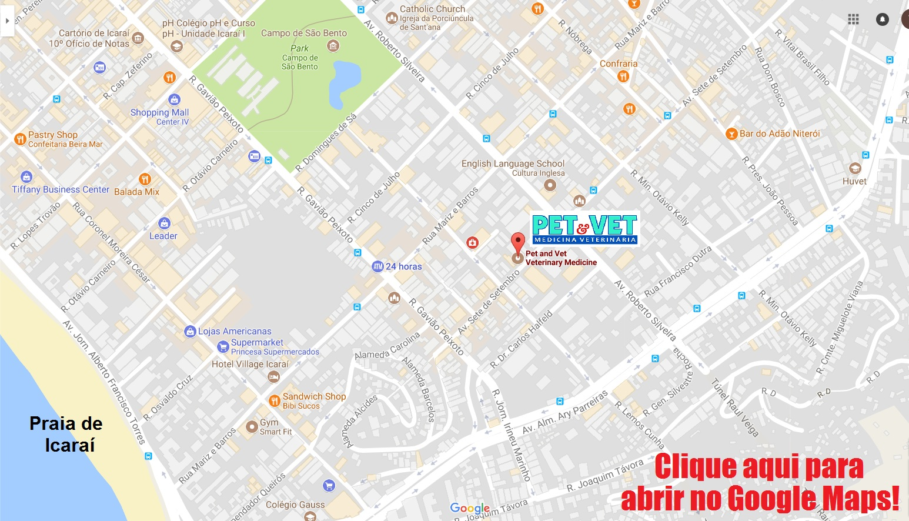

Veterinaria Pet & Vet - Icaraí, Niterói
Hable con Nosotros
¡Esperamos su contacto y su visita!
Telefone: (21) 2711-7557 e 2711-8898
Email: pet_vet@ibest.com.br, veterinariapetevet@gmail.com
Funcionamiento: 24 horas. ¡Siempre abierto!
Cómo llegar a nosotros:
Av Sete de Setembro, 65 - Icaraí - Niterói - RJ - CEP 24230-250
Haga clic en la imagen de abajo para abrirla en Google Maps:
(21) 2711-8898 | (21) 2711-7557
pet_vet@ibest.com.br
Av. Sete de Setembro, 65 • Niterói / RJ
Pet & Vet Niterói © 2017 | Clínica Veterinaria
Visítenos en Facebook